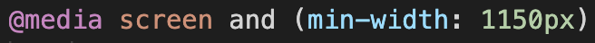

Forskellige enheder har forskellige skærmstørrelser og forskellige opløsninger. For at kunne give brugeren den bedst mulige oplevelse af ens webside, uanset enhed, arbejde man med responsivtdesign.Der findes fire overordnede tilgange til layoutformer, når man arbejder med responsivtdesign.
Layoutet er baseret på faste mål og ændres derfor ikke ved forskellige skærmstørrelser. Det ekstra plads der på skæmen, bliver til tomrum i siderne. Siderne bliver typisk beskæret når websiden åbnes på desktop, mens at den typisk bliver skaleret på mobile enheder. Denne layoutform fungere som regel dårligt på andre skærmstørrelser end den først tiltænkte
Her tilpasser elementerne sig i bredden. Man angiver bredderne relativt og typisk i procent. De elementerne tilpasser sig i bredden kan nogle af elementerne godt blive meget smalle, dog er der grænser for hvor smalle. Bruges mest i tilfælde hvor indhold og funktionalitet vægtes højere end det grafiske. Giver ofte en god bruger oplevelse.
Består typisk af et flydende layout. Her bestemmer en række regler hvordan layoutet skal ændre sig afhængigt af skærmbredde. Det er i dag det der bruges mest til responsivtdesign og er ikke specielt vanskeligt at arbejde med, kræver dog forberedelse i form af fx wireframes. Det er vigtigt at man her tænker i mobile first for det bedste resultat.
En mellemting mellem statisk og responsive. Det adaptive layout består af en række statiske layouts, som styres af @mediaqueries. Denne metodes bruges sjældent og anvendes typisk hvis et statisk layout skal konverteres til et responsivt layout. Er typisk mobile last.
I undervisningen har vi arbejdet med at lave vores hjemmesider responsive. For at kunne gøre vores wedsider responsive skal man i sin CSS tilføje et breakpoint, som angives ved @media i CSS. Et breakpoint er den bredde hvor en regel overtager fra en anden. Efter at have angivet @media skriver man screen for at angive at dokumentet er til skærm. Man kan også angive til print, speech eller alle enheder. Dernæst tilføjes media features, som kan være mange ting. Typisk bruges min-width og/eller max-width, men man kan også tilføje antal farver enheden kan vise, skærmopløsning mfl. Selectoren kommer i sidste ende til at se sålede ud:
Udover breakpointet i sin CSS skal man i sin HTMl huske at lave en viewport. Viewport laves med et meta-tag der kan fortælle mobil enheder at de ikke skal forsøge at skalere siden. Hvis denne ikke tilføjes, vil mediaqueries typisk ikke virke. Meta tagget ser sålede ud:
Jo flere breakpoints der laves, jo flere skærmstørrelser. Typisk laver man breakpoints til tre størrelse skærme; mobil, tablet og web. Når man arbejder med responsivt design er det vigtigt at arbejde mobile first, da det kan være svært at tilpasse informationer til begrænset plads. Derud over bruges mobile enheder oftere end computere, så derfor er det vigtigt at ens webside ser vel designet, først og fremmest på mobilversionen. Når man arbejder mobile first og derefter arbejder sig op i skærmstørrelse og tilføjer flere features, kalder man for progressive enhancement.
Ved et breakpoints skrives en min-width skærmstørrelse. Denne min-width betyder at når skærmen er større end den givne værdi skal den opføre sig på en måde, fx: